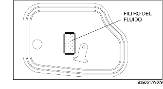

LAVAGGIO RADIATORE OLIO (CAMBIO-DIFFERENZIALE AUTOMATICO)
B3E051719900W01
-
Nota
-
• Quando l'ATX viene revisionato o sostituito, i condotti (tubi e tubi flessibili) dell'olio e il radiatore dell'olio contaminati devono essere lavati accuratamente.
1. Rimuovere i due tubi flessibili del radiatore dell'olio e applicare aria compressa alla pressione di 196 kPa (2,0 kgf/cm2; 28 psi) dalla parte del tubo flessibile (tubo) di ritorno.
-
Avvertenza
-
• Il lavaggio a macchina per togliere i depositi di particelle dal deflettore del fluido deve essere eseguito con la massima cura per garantire che abbia effetto e che non peggiori la situazione.
2. Se l'aria non esce dal lato di mandata, eseguire il lavaggio ricorrendo all'uso di una macchina. (Vedere Lavaggio a macchina).
Marche di apparecchiature di lavaggio raccomandate
|
Costruttore
|
Numero categorico
|
Descrizione
|
|
Kent Moore
|
J35944-AMAZ
|
Kit di lavaggio o apparecchiatura equivalente
|
|
OTC
|
60081
|
Convertitore di coppia portatile, pulitrice per radiatore olio o apparecchiatura equivalente
|
3. In caso di passaggio d'aria, eseguire la procedura seguente.
-
(1) Rimuovere la coppa dell'olio e controllare il filtro del fluido.

-
(2) Se il filtro non è visibile in quanto interamente coperto da impurità, sostituire il radiatore dell'olio. [Vedere RIMOZIONE/INSTALLAZIONE RADIATORE OLIO (CAMBIO-DIFFERENZIALE AUTOMATICO) [Z6]].
-
(3) Se il filtro è visibile, lavare a macchina i condotti del radiatore dell'olio.
-
• Ripetere due volte il lavaggio nei due sensi non è di alcuna utilità in quanto le impurità vengono espulse dalla parte del tubo di mandata dell'ATX.
Lavaggio a macchina
Procedura di riparazione
1. Prima di eseguire il lavaggio a macchina, ispezionare tubi flessibili/condotti e relative fascette. Per rimuovere velocemente l'ostruzione, il lavaggio a macchina deve essere eseguito prima in senso inverso e quindi in senso normale rispetto al flusso del fluido. Se non si procede in tal modo, l'ostruzione potrebbe strozzare ulteriormente il flusso del fluido ATF attraverso la maglia interna del deflettore del radiatore dell'olio rendendo vano ogni tentativo di lavaggio.
Ispezione dei condotti dell'olio e delle relative fascette
1. Prima di riutilizzarli, ispezionare i condotti (tubi flessibili/tubi rigidi) per vedere se hanno tagli, grinze (pizzicature), incrinature o danneggiamenti di altro genere.
-
• In caso di anomalie, sostituire condotti e fascette.
-
Avvertenza
-
• Sostituire sempre anche le fascette insieme ai tubi flessibili.
Lavaggio al contrario
1. Seguendo le istruzioni fornite dal costruttore, collegare l'apparecchiatura in modo che il flusso del detergente vada in senso contrario rispetto al normale flusso del fluido.
2. Lavare radiatore dell'olio e condotti finché il fluido detergente non esce pulito.
-
Avvertenza
-
• Se il lavaggio non sortisce risultati, inviare il radiatore dell'olio in un centro specializzato o sostituirlo.
Lavaggio normale
1. Collegare l'apparecchiatura in modo che il flusso del detergente vada nel senso del normale flusso del fluido.
2. Lavare radiatore dell'olio e condotti finché il fluido detergente non esce pulito.